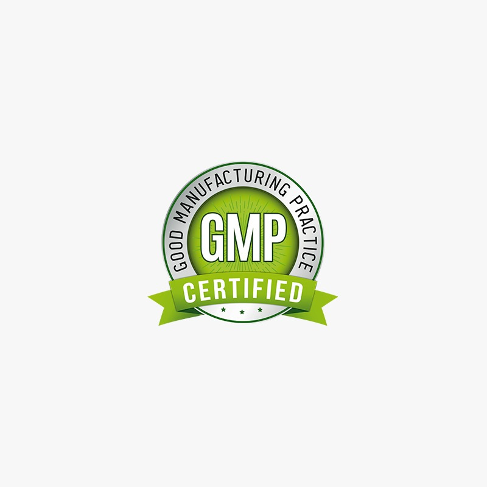

PROPOSITO
STAR NUTRITION
Somos una empresa jovén que tiene como objetivo brindar productos de primera calidad, es por eso que todos nuestros productos son realizados con materias primas importadas de los principales productores del mundo. En nuestro laboratorio contamos con el equipamiento apropiado y las instalaciones requeridas para un correcto tratamiento de las materias primas durante todo el proceso de producción. En cuanto a lo que nuestra política de calidad respecta somos meticulosos y exigentes con nuestros métodos de elaboración, control de calidad y procedimientos de limpieza para garantizar que tanto las materias primas como el producto terminado no sufran ningún tipo de contaminación. Nuestros estándares de calidad son altos ya que nuestro fin es igualar la calidad de las marcas lideres del mercado internacional contemplando el poder de compra actual de los consumidores de suplementos en Argentina. La calidad de nuestros productos está garantizada a nivel Nacional por la Administración Nacional de Medicamentos, Alimentos Y Tecnología Medica (ANMAT) y a Nivel Internacional por el cumplimiento de las Normas de calidad GMP (Good Manufacturing practice). En Español Normas de Correcta Fabricación.
